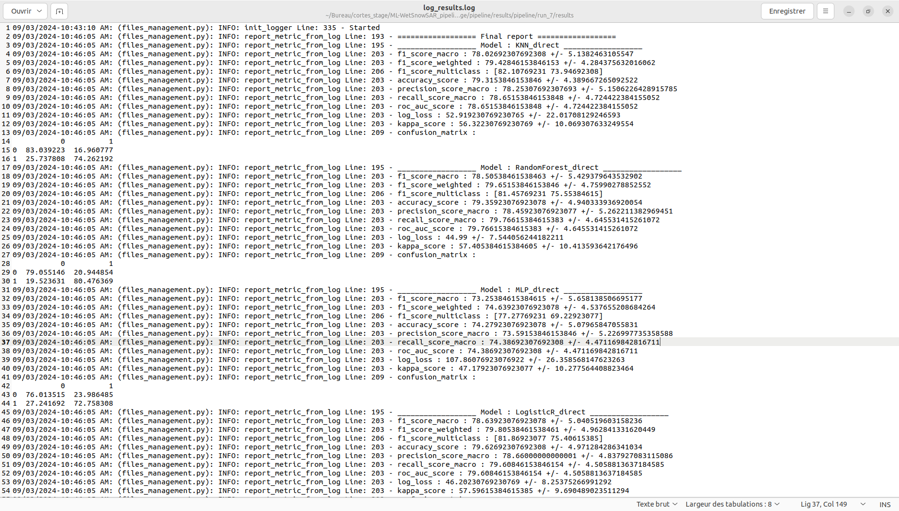
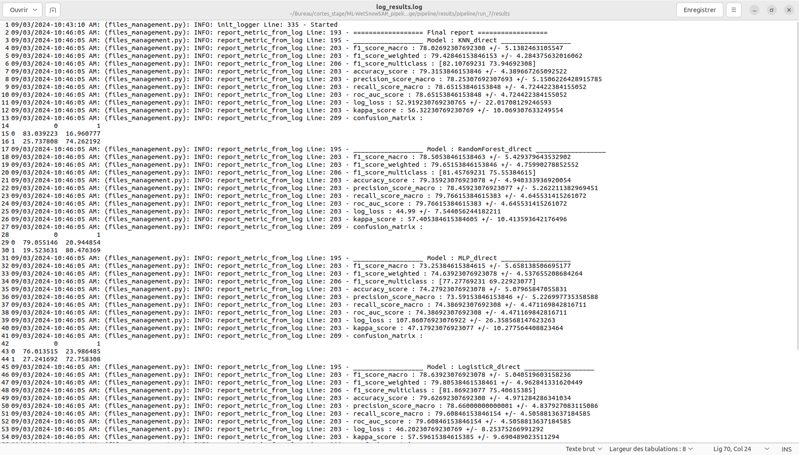
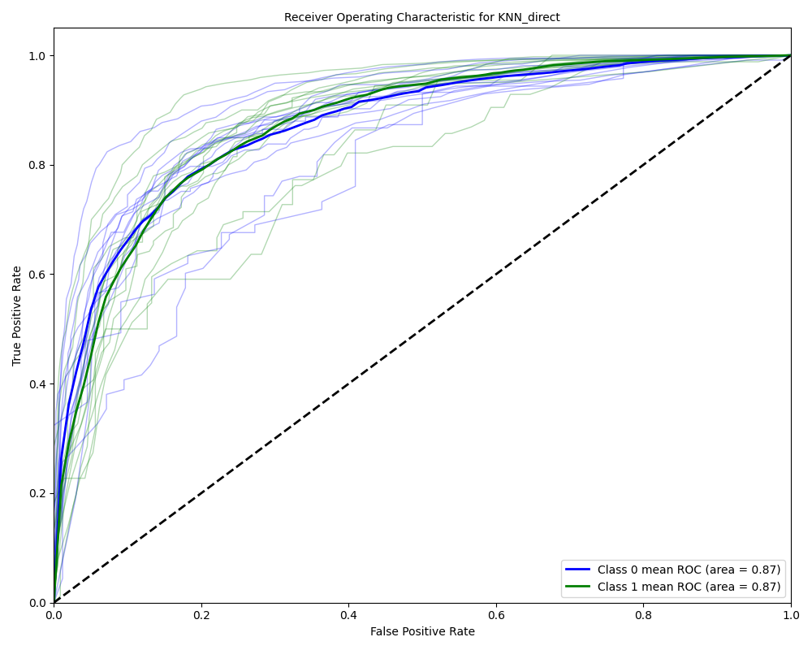

Saved Images and Results of a Run
This section provides an overview of the saved images and results generated from a run. These visuals and metrics help in analyzing the performance of the models across different folds and configurations.
Model-Specific Results
For each model, results are saved across all folds, allowing for detailed analysis of its performance. Below is an example of such a detailed result set for a single model.
{kind=link}
Final Aggregated Results
The final results aggregate the performance of all models, providing a comprehensive overview that averages the outcomes across all folds.
{kind=link}
Boxplots for Performance Comparison
Boxplots are an effective way to visualize the variability in model performance. The results can be grouped either by fold or by model to provide different insights:
By Fold: This grouping highlights the performance variability across different folds, helping to understand how each fold impacts the model’s performance.
By Model: This grouping allows for comparing the performance of different models, giving insights into which model performs best on average across folds.
{kind=link}
{kind=link}
ROC Curves
ROC (Receiver Operating Characteristic) curves are particularly useful in evaluating models in multi-class or multi-label classification tasks. They illustrate the trade-off between the true positive rate and false positive rate across different thresholds.
{kind=link}